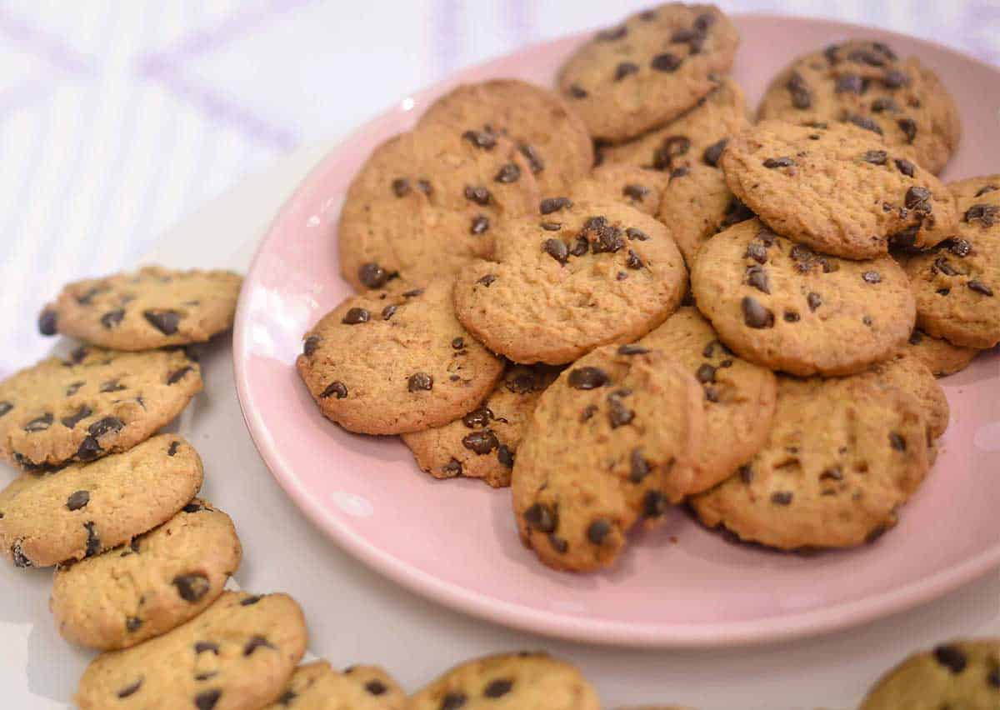

Se você é apaixonado por cookies e busca a receita ideal para encantar a sua família e amigos, você está no
lugar certo! O cookie americano perfeito é uma verdadeira obra-prima, combinando crocância externa com maciez
interna, garantindo uma explosão de sabor a cada mordida. Nossa receita, compartilhada por entusiastas
culinários, revela todos os segredos para alcançar a textura e o sabor autênticos desses cookies tradicionais.
Com ingredientes simples e um passo a passo detalhado, você reproduzirá em sua própria cozinha aquele sabor
inconfundível dos cookies americanos. Com generosos pedaços de chocolate misturados a uma massa que equilibra
perfeitamente a crocância e a suavidade, esses cookies são ideais para qualquer momento, desde um lanche rápido
até uma sobremesa caprichada para compartilhar. Siga nossas instruções e mergulhe na experiência de preparar
esses cookies incríveis. Desfrute do sabor genuíno do cookie americano perfeito feito por você mesmo! Confira a
receita completa e renda-se a essa delícia irresistível.
Materiais Necessários
Assadeira
Bandeja
Tigela
Espatula
Ingredientes (rende 22 porções)
125 g de manteiga sem sal em temperatura ambiente
1/2 xícara de açúcar mascavo
1 e 3/4 de xícara de farinha de trigo
300 g de chocolate meio amargo picado
3/4 xícara de açúcar
1 ovo
1 colher (chá) de fermento em pó
1 colher (chá) de essência de baunilha
para fazer cookie de chocolate acrescentar 1/4 xícara de chocolate em pó
Modo de preparo
Misture a manteiga, açúcar mascavo, açúcar, essência de baunilha (e chocolate em pó, se for fazer cookies
com base de chocolate).
Adicione o ovo batido aos poucos e misture bem.
Acrescente a farinha aos poucos e misture bem (pode ser na mão ou na batedeira planetária)
Por último, adicione o fermento e misture só para incorporá-lo à massa.
Depois da massa bem misturada, adicione o chocolate picado.
Forme bolinhas pequenas e asse em forno preaquecido, sobre papel manteiga, por aproximadamente 15 a 20
minutos (250° C).

Receita feita por: KaBonjour em TudoGostoso.com.br